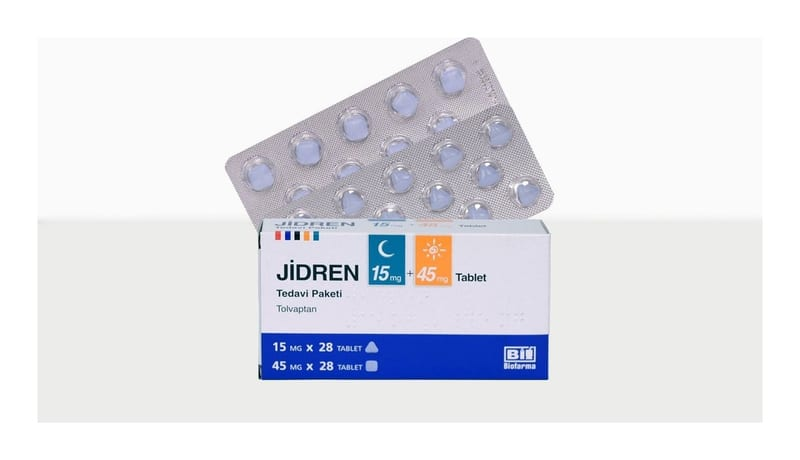

Jidren 15 mg + 45 mg Tablet, Tedavi Paketi, 56 ADET (28 ADET 15 MG, 28 ADET 45 MG)

Ne için kullanılır
KT · Bölüm 1JİDREN, “otozomal dominant polikistik böbrek hastalığı” (ODPBH) isimli hastalığın tedavisi için kullanılan bir ilaçtır. Bu hastalık, böbreklerde sıvı dolu kistlerin büyümesine yol açar ve bu
da, çevre dokularda baskı yaratarak ve böbrek fonksiyonunu azaltarak, muhtemelen böbrek yetmezliğine neden olur. JİDREN, 1 ila 4. evrede kronik böbrek hastalığı (KBH) olan ve hastalığının hızlı ilerlediği ispatlanan yetişkinlerde, ODPBH’nin tedavisi için kullanılır.
JİDREN, etkin madde olarak tolvaptan içerir. Tolvaptan, ODPBH hastalarının böbreklerinde kist oluşumuna yol açan bir hormon olan vazopresinin etkisini bloke eder. JİDREN, vazopressinin etkisini bloke ederek ODPBH hastalarında böbrek kistlerinin gelişimini yavaşlatır, hastalık semptomlarını azaltır ve idrar üretimini arttırır.
JİDREN tedavi paketi içeriğinde 2 ayrı dozda tablet bulunmaktadır. Tabletler sırasıyla 15 mg ve 45 mg tolvaptan içermektedir.
15 mg tablet: Mavi renkli, üçgen bikonveks tabletlerdir. 45 mg tablet: Mavi renkli, kare bikonveks tabletlerdir.
JİDREN, 28 adet 15 mg tablet ve 28 adet 45 mg tablet içeren, toplamda 56 tabletlik PVC/PE/PVDC alüminyum folyo blister ambalajlarda kullanıma sunulmaktadır.